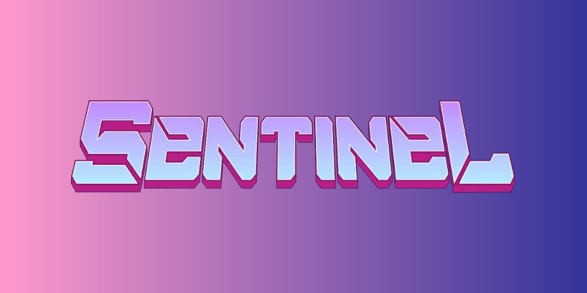
Les Sentinelles (Terre-616)
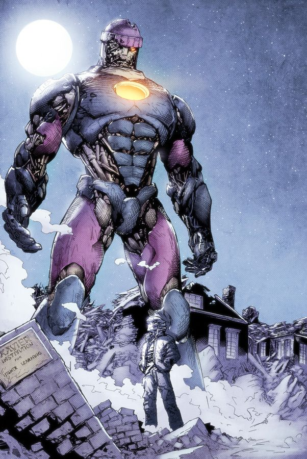
Origines :
Les Sentinelles sont des robots dotés d'une intelligence artificielle conçues pour traquer les mutants.
Bien qu'un premier prototype ait vu le jour à San Francisco en 1906, les Sentinelles modernes ont été créées par le Dr Bolivar Trask.
Son intention était de les utiliser pour sauver l'humanité de ce qu'il considérait comme une menace imminente pour l'existence de l'espèce humaine, due au nombre croissant de mutants émergents.
Trask a créé un Master Mold (Moule Initial en VF) comme unité Sentinelle « en chef », une IA capable de créer indépendamment des Sentinelles à volonté.
Bien que Trask ait inventé les Sentinelles dans notre réalité, les nombreuses vies de Moira MacTaggert ont montré que des IA similaires émergent inévitablement à un certain moment de l'évolution environnementale et sociétale de l'humanité, quel que soit leur véritable inventeur.
Les premières Sentinelles
Au cours d'un débat télévisé avec le Professeur Xavier, Trask révèle l'existence de ses nouveaux exécuteurs robots et les active.
Bolivar offre au public un moyen de défense contre la prétendue menace mutante en démontrant sa nouvelle invention à Xavier (sans savoir que Xavier est lui-même un mutant).
Fier de sa révélation, Trask commence à commander la Sentinelle #1, mais les choses prennent une tournure inattendue lorsque le robot se retourne soudainement contre lui, l'éblouissant d'un faisceau lumineux et déclarant que les Sentinelles étaient supérieures à l'humanité.
Peu après, les Sentinelles capturent Trask et Xavier pour attirer l'équipe des X-Men dans un piège, les robots ayant décidé que la meilleure manière pour eux d'atteindre leur objectif était de prendre le pouvoir.
Les Sentinelles, en attente d'instruction, permettent au Professeur X d'envoyer une convocation mentale à ses X-Men pour demander de l'aide.
Scott, ayant entendu l'appel de son mentor, se précipite dans le studio et vient en aide contre la dernière Sentinelle présente.
Cependant, avant que Cyclope ne puisse s'en occuper, la Sentinelle se désactive et tombe.
Xavier ordonne alors mentalement à Scott d'escorter le public hors du studio afin de pouvoir examiner la Sentinelle et découvrir ce qui l'a désactivée.
Pendant ce temps, les autres Sentinelles se sont échappées avec Trask comme prisonnier.
C'est alors que Xavier sonde mentalement l'esprit du robot désactivé et apprend l'emplacement de leur base secrète, puis il envoie ses X-Men sauver Trask de ses propres inventions rebelles.
Sur place, Trask réalise qu'avec assez de puissance, le Master Mold peut continuer à produire des Sentinelles pour l'éternité et dominer l'humanité, il décide alors qu'il ne peut pas permettre une telle chose et sabote la base des Sentinelles pour détruire le Moule Initial.
Alors qu'il fracasse une machine vitale dans le laboratoire, cette dernière explose et emporte Trask avec elle.

.jpg)
Sentinelles Mark II

Après sa mort, Larry Trask réactive
les Sentinelles.
Il développe alors une nouvelle génération de Sentinelles, les Mark II, en y ajoutant une technologie leur permettant de s'adapter physiquement à n'importe quel mutant.
Mais les Sentinelles Mk II sont finalement réduites en cendres par Cyclope, lorsque celui-ci les dupe en les persuadant d'aller détruire le soleil, leur faisant croire que celui-ci serait l'élément à l'origine des pouvoirs mutants.

Sentinelles Mark III
Après la mort de Larry, la propriété des plans pour les Sentinelles tombe entre les mains du gouvernement des États-Unis.
Le Dr Steven Lang est devenu le chef d'une recherche fédérale (le Projet : Armageddon) sur les mutants.
Mais ce dernier, à l'insu de ses employeurs, était en fait un fanatique anti-mutant qui utilisa sa position pour obtenir l'accès aux notes et dessins de Larry et Bolivar Trask.
Alors que les X-Men célébraient Noël à Manhattan, des attaques surprises ont conduit à leur capture.
Mais les Sentinelles Mk III étaient inférieures aux précédentes, du fait que Lang ne travaillait qu'avec des notes incomplètes.
Il les a également rendues moins intelligentes que les précédentes pour arrêter toute forme de rébellion possible.
En particulier, Lang a construit des Sentinelles ressemblant aux X-Men originaux, connues sous le nom de X-Sentinelles.
Les X-Sentinelles se sont fait passer pour les véritables X-Men, mais Wolverine a découvert que ces imposteurs n'étaient pas humains et a déchiqueté le sosie de Jean Grey, exposant ainsi leur vraie nature.


Sentinelles Mark IV, V et VI


Après que la Confrérie des Mauvais Mutants menée par Mystique ait tenté d'assassiner le sénateur Robert Kelly alors qu'il effectuait une recherche publique sur la menace possible des êtres surhumains et des mutants, le cabinet du président a autorisé le projet secret et illégal Wideawake à rechercher et, si nécessaire, capturer tout mutant que la direction du projet pourrait considérer comme une menace à la sécurité nationale.
Le gouvernement a alors contacté le magnat industriel Sebastian Shaw, ignorant qu'il était lui-même un mutant, pour construire la nouvelle lignée de Sentinelles.
Les Industries Shaw sont alors autorisées par le gouvernement à construire des sentinelles top-secrètes pour être utilisées dans le projet Awakening.
C'est ainsi que Shaw a produit trois modèles : les Sentinelles Mk IV, les Sentinelles Mk V et les Sentinelles Mk VI.
Mais aucun de ces modèles ne s'est avéré aussi réussies que les modèles Mk II et Mk III.

Nimrod
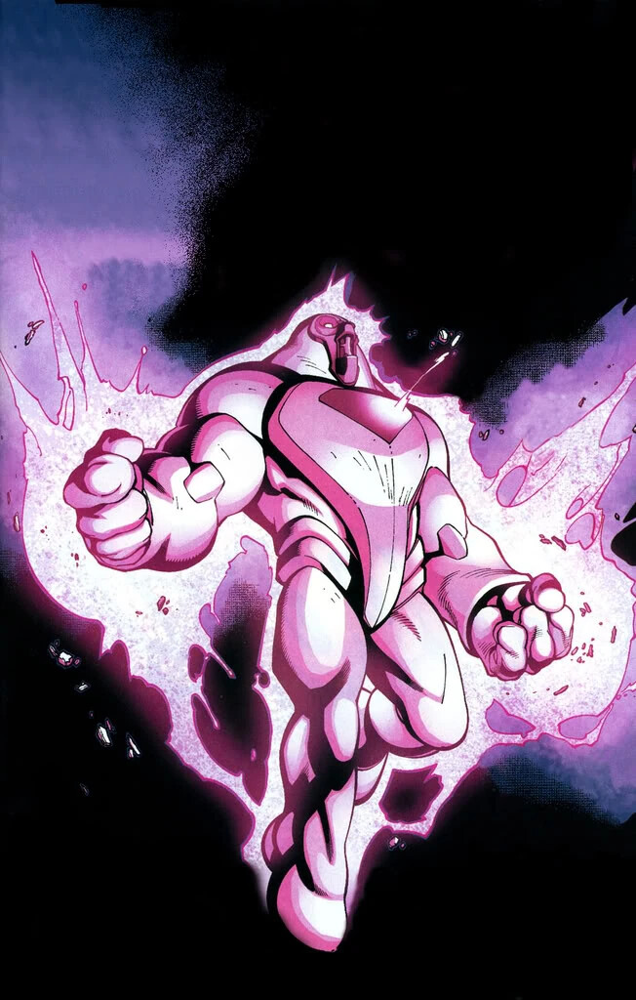
Nimrod est une Sentinelle très avancée, venue d'un futur alternatif.
Il est connu pour son pouvoir redoutable, sa poursuite implacable des mutants et son incursion temporelle avec les X-Men.
Les autres modèles de Sentinelles
Il existe encore un grand nombre de modèles de Sentinelles, mais aucune n'a eu de véritable impact sur l'univers des mutants.
On peut noter parmi eux les modèles :
- -Sentinelles Mark IX : Un prototype de la version Mk X.
- -Sentinelles Mark X : Une valise pliable à l'échelle humaine pouvant se transformer en Sentinelle.
- -Sentinelles Mark XI : Un modèle tout-terrain transformable, pour meurtre "au sol, air ou mer".
- -Sentinelles Mark XII : Des Sentinelles Nanobots, faits en métal et armés d'un laser.
- - et les Sentinelles Mark XIII : Une Sentinelle inspirée du Tri-Sentinel, à trois têtes, six bras et alimenté par un réacteur nucléaire miniaturisé.

Capacités :
Les Sentinelles sont technologiquement très avancées, et ont présenté au fil de leurs apparitions une grande variété de capacités.
Les Sentinelles sont toutes armées, principalement avec des dispositifs capable de projeter des rafales d'énergie vie les mains.
Elles peuvent voler dans les airs grâce à des réacteurs installés dans leurs bottes, et détecter des mutants sur une très grande distance grâce à leur système électroniques et divers capteurs internes.
Elles possèdent une grande force physique, et leur corps est très résistant.
Leur corps est souvent composé d'un alliage d'acier nommé l'omnium.
Certains modèles sont capables de modifier leur forme physique , ou de se ré-assembler après avoir été détruites.
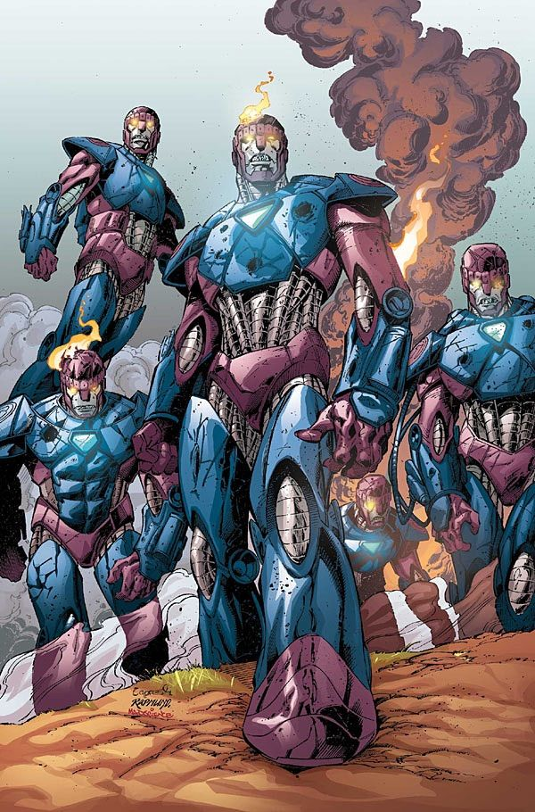
Apparence :
Les Sentinelles sont des robots géants à l'apparence de soldat humanoïde.
Elles mesurent entre 6 et 20 mètres de haut en fonction des modèles.
Les couleurs principales des Sentinelles sont le violet et le rose, avec des accent bleus ou argentés.
Leurs yeux sont lumineux et souvent de couleur rouge ou jaune.
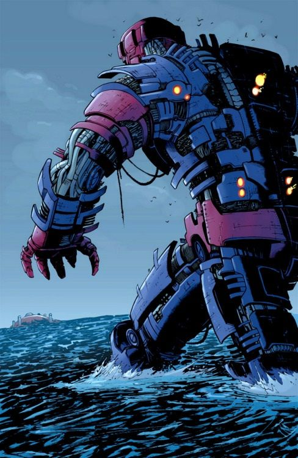
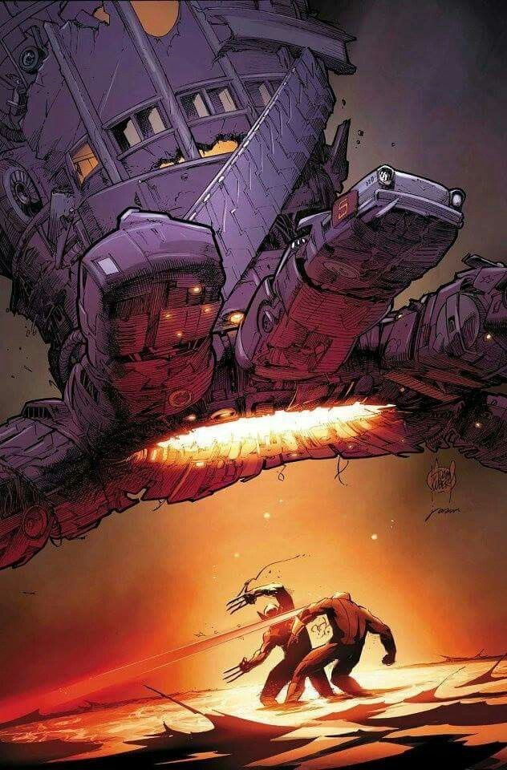

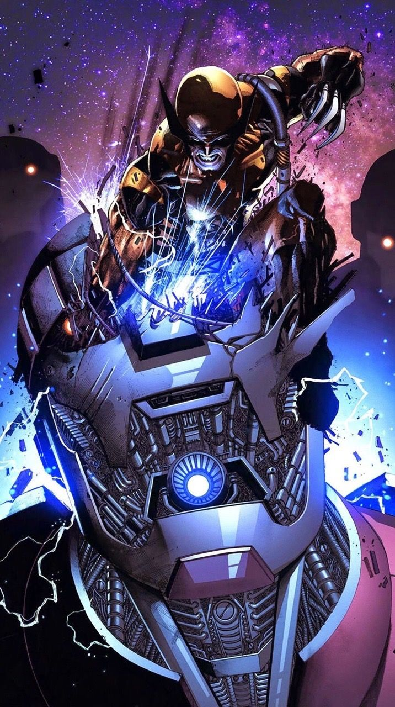
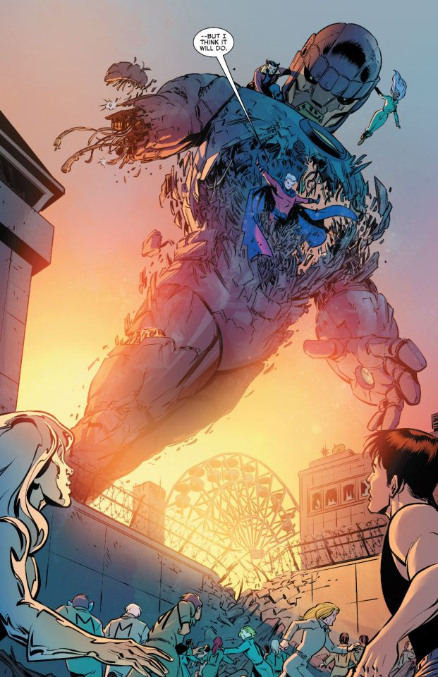

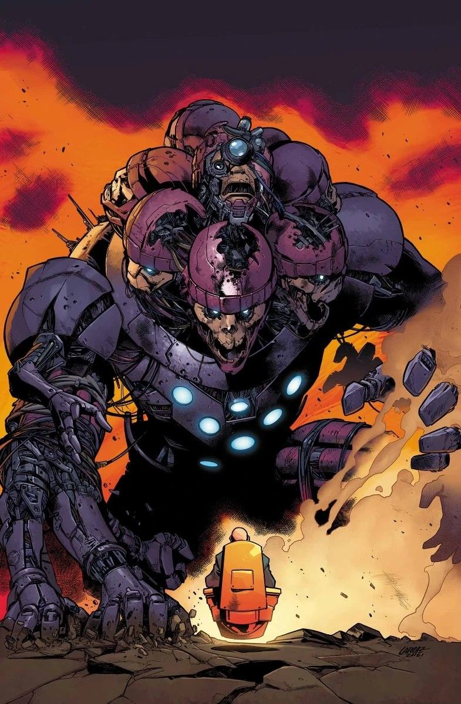
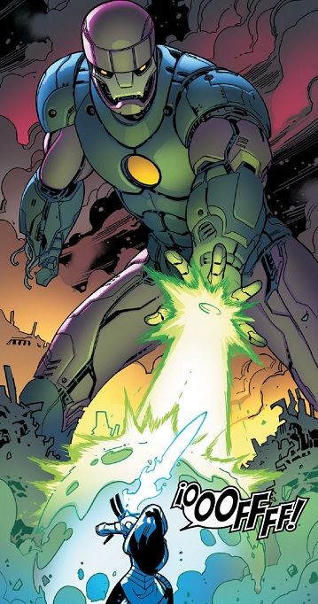
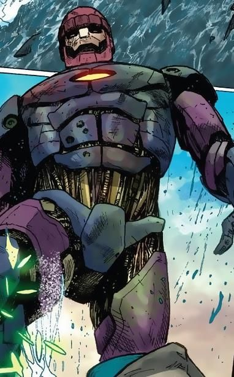
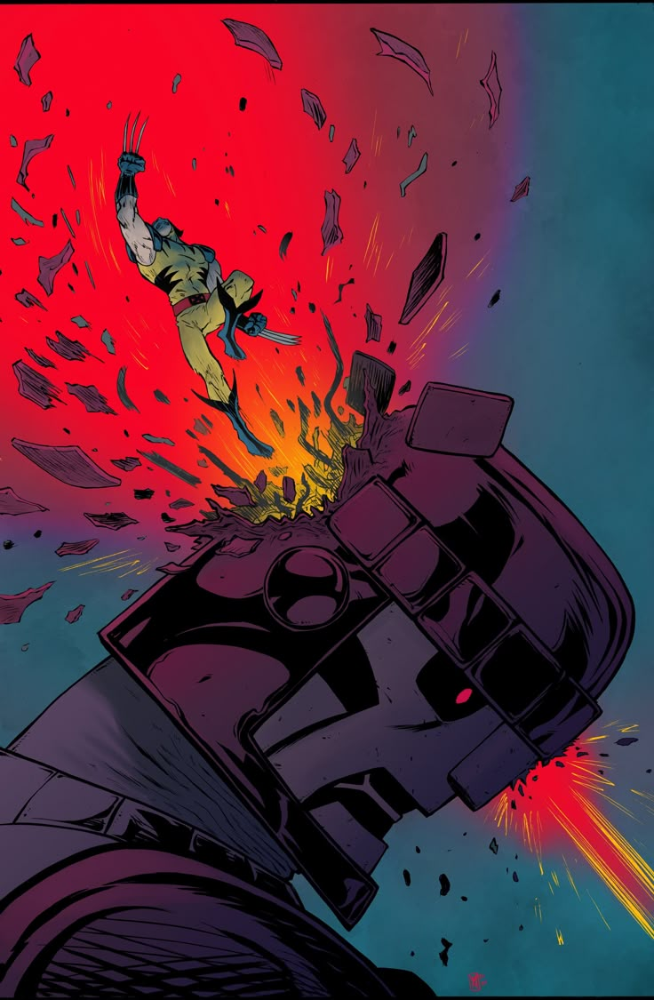

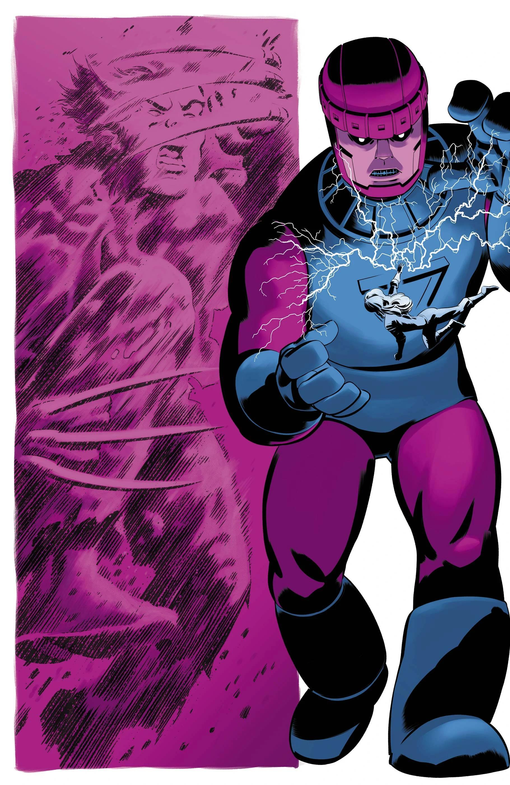